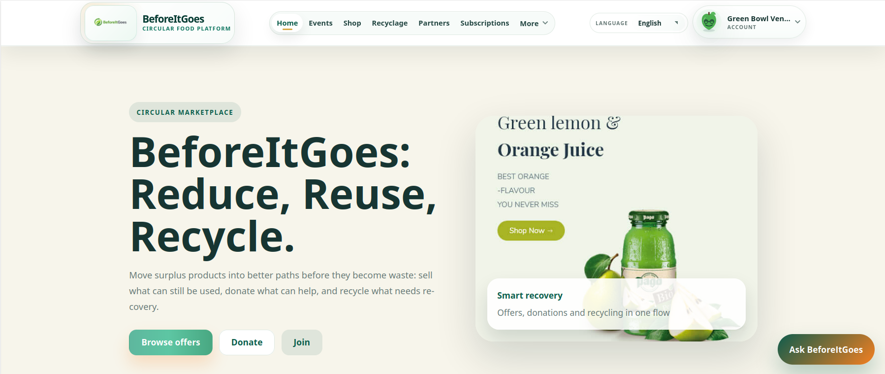
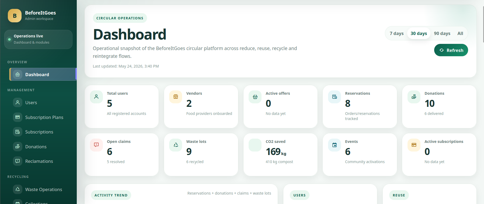
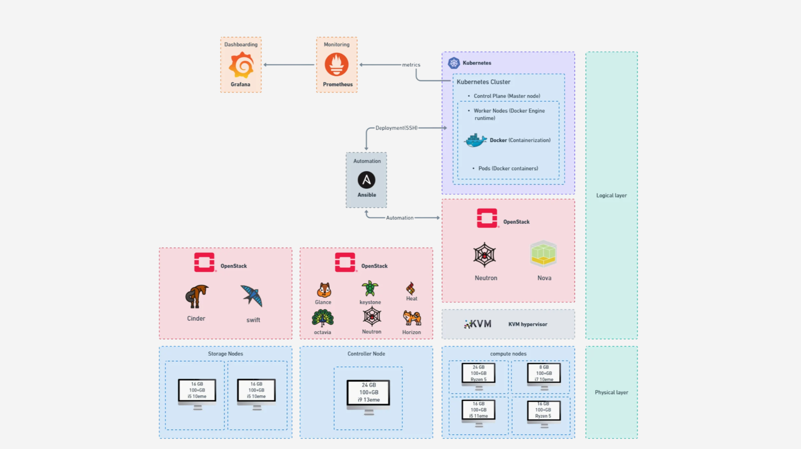
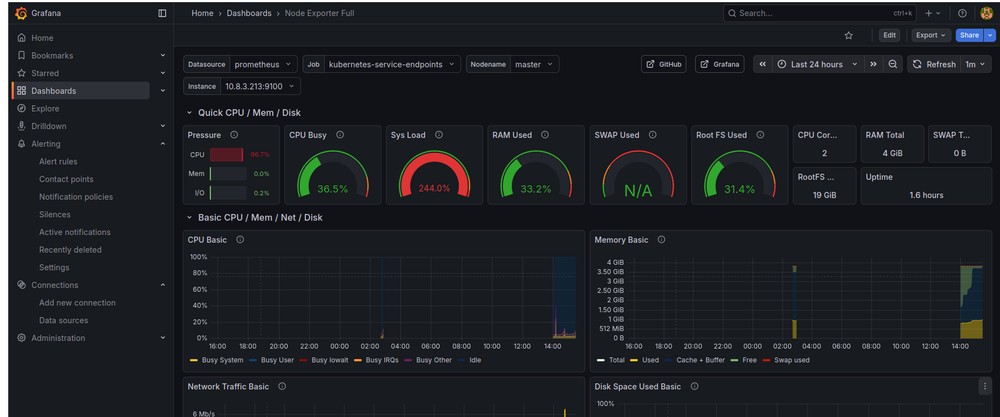

BeforeItGoes - Plateforme SaaS Anti-Gaspillage Alimentaire
Déployée sur Cloud Privé OpenStack | Spring Boot · Angular · IA · Docker · Kubernetes
BeforeItGoes est une plateforme marketplace intelligente développée dans un contexte académique, mettant en relation des vendors (restaurants, boulangeries, supermarchés) avec des clients pour vendre les invendus alimentaires à prix réduit, réduisant ainsi le gaspillage alimentaire tout en proposant une infrastructure Cloud conteneurisée, orchestrée et observable.
Objectif du projet
Centraliser la gestion des surplus alimentaires et proposer une solution moderne, scalable et monitorée sur un environnement Cloud privé, en combinant une logique métier avancée côté applicatif et une infrastructure DevOps complète côté déploiement.
Ma contribution
Projet réalisé en équipe à l'ESPRIT, où mon rôle s'est concentré sur le développement du module de gestion du marketplace alimentaire — couvrant l'ensemble du cycle de vie des offres, la validation intelligente par IA, le scoring automatique des vendors, ainsi que le déploiement de l'infrastructure sur cloud privé.
Côté applicatif (Backend & Frontend)
- Conception et implémentation de l’API REST complète.
- Pipeline de validation IA des images d'offres alimentaires via ResNet50 (Transfer Learning) et de la cohérence image/description via CLIP (Fine-Tuning) — exposé via FastAPI.
- Système automatique de badge et scoring vendors (Spring Scheduler).
- Dashboard analytics admin avec ApexCharts.
- Workflows n8n pour l’automatisation du cycle de vie des offres.
- Système de notifications emails (JavaMailSender).
- Intégration Cloudinary pour la gestion des images.
- Paiement en ligne via Stripe.
Côté infrastructure (DevOps & Cloud)
- Conteneurisation de tous les composants avec Docker.
- Déploiement et orchestration avec Kubernetes.
- Automatisation de l’infrastructure avec Ansible.
- Mise en place de l’observabilité avec Prometheus et Grafana.
- Déploiement sur cloud privé OpenStack.
Technologies
Informations du projet
- Catégorie Cloud, DevOps & SaaS
- Contexte Projet académique
- Rôle Développement & infrastructure
- Infrastructure Cloud privé OpenStack
Captures du projet



